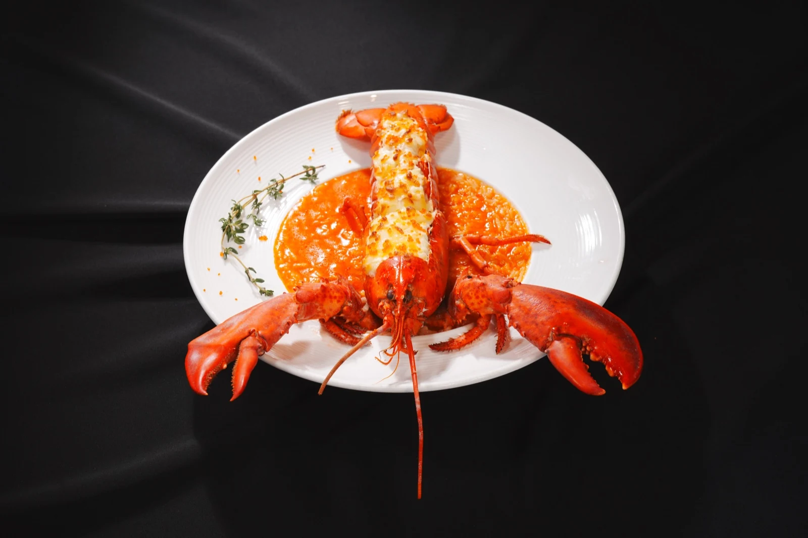
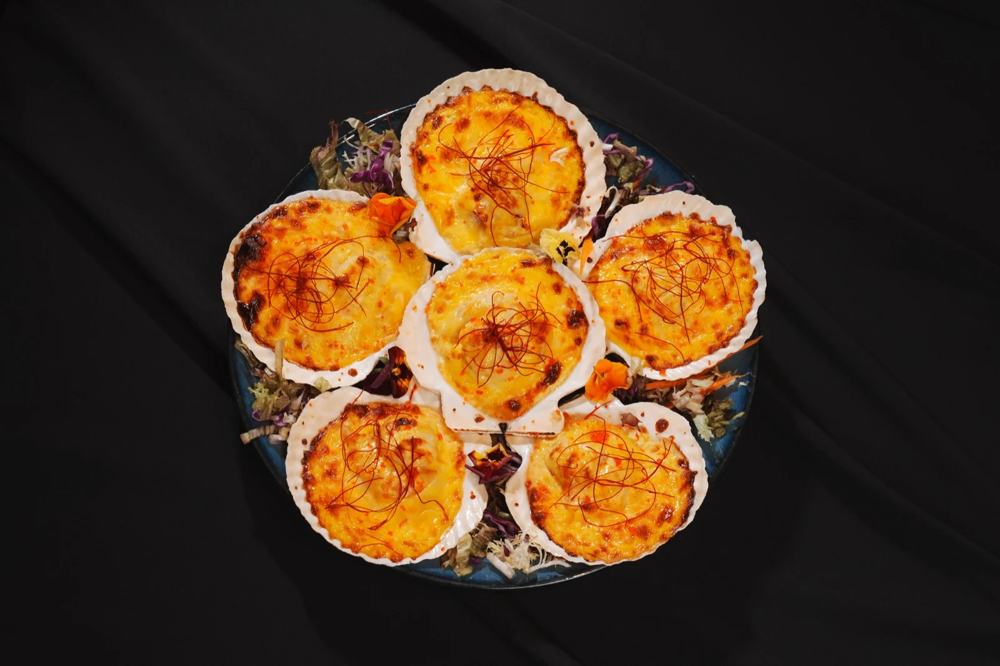
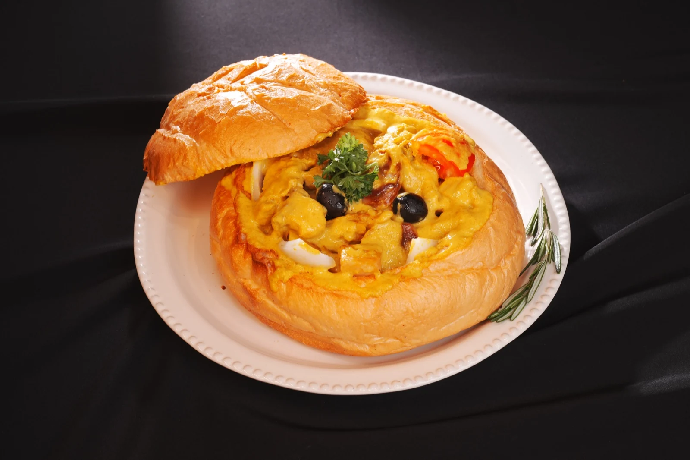

跳到内容
Max
Your
Way
作品
社媒营销
摄影
宣传片
企业合作
服务
报价
菜单
作品
社媒营销
摄影
宣传片
企业合作
服务
报价
关于工作室
简体
繁體
EN
项目咨询 ↗
← 商业摄影
ART GARDEN
葡藝園
餐厅菜单摄影
工作室独立拍摄
项目简介
为葡藝園拍摄整组菜单，把菜品的色泽、质地和摆盘拍清楚。
浏览项目作品 ↗
项目交付
菜单菜品
菜品细节
餐厅菜单系列

菜单菜品

菜品细节

餐厅菜单系列
查看服务报价 ↗
更多合作项目 ↗
咨询类似拍摄 ↗
×
 MaxYourWay
MaxYourWay